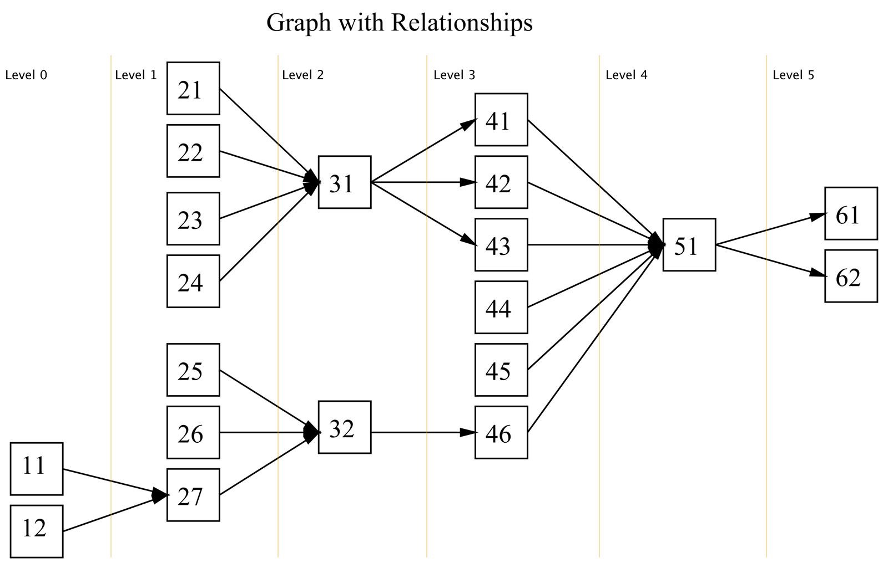

Find the source at https://github.com/WildGums/Orc.DependencyGraph.
| Chat |  |
| Downloads |  |
| Stable version |  |
| Unstable version |  |
Introduction
This library will help navigate a directed acyclic graph (DAG).
The goal of this library is to make it easy to:
- Find a specific node within a graph.
- Find all nodes on a certain level of the graph.
- Find all nodes between two levels of the graph.
- Find all nodes related to a given node. (i.e. find its decedents and/or its precedents on any level of the graph.)
- Sort the nodes in topological order
Naming Convention
- Descendants. i.e. What descends from or comes after: Child
- Precedents. i.e What precedes, or comes before: Parent
- Level. We consider level as topological level of the node. I.e. Level 1 consists of nodes whose Precedents are of Level 0. In general level is the longest path from the node to the root of the graph.
Interface
Graph
public interface IGraph<T>
where T : IEquatable<T>
{
INode<T> Find(T value);
void AddSequence(IEnumerable<T> sequence);
void AddSequences(IEnumerable<IEnumerable<T>> sequences);
IEnumerable<INode<T>> Nodes { get; }
bool CanSort();
bool CanSort(IEnumerable<T> sequence);
int CountNodes { get; }
int CountLevels { get; }
IOrderedEnumerable<INode<T>> GetNodes(int level);
IOrderedEnumerable<INode<T>> GetNodesBetween(int levelFrom, int levelTo);
IOrderedEnumerable<INode<T>> Sort();
}
Note:
AddSequence(IEnumerable<T> sequence): the sequence must contain at least 2 items. The relationship between the items is automatically assumed as item1 -> item2 -> item3 etc...
Node
public interface INode<T>
where T: IEquatable<T>
{
T Value { get; }
IGraph<T> Graph { get; }
int Level { get; }
// relativeLevel >= relativeLevelFrom && relativeLevel <= relativeLevelTo
IOrderedEnumerable<INode<T>> GetNeighbours(int relativeLevelFrom, int relativeLevelTo);
// relativeLevel < 0
IOrderedEnumerable<INode<T>> Precedents { get; }
// relativeLevel > 0
IOrderedEnumerable<INode<T>> Descendants { get; }
// relativeLevel == relativeLevel - 1
IOrderedEnumerable<INode<T>> ImmediatePrecedents { get; }
// relativeLevel == relativeLevel + 1
IOrderedEnumerable<INode<T>> ImmediateDescendants { get; }
// Precedents of the node without precedents (roots)
IOrderedEnumerable<INode<T>> TerminatingPrecedents { get; }
// Descendants of the node without descendants (leafs)
IOrderedEnumerable<INode<T>> TerminatingDescendants { get; }
}
Note:
- All the methods return an ordered enumerable of INode. The ordering is based on the "level" of the node. (Within a level the ordering is not important.)
- If possible the methods returns all the INodes lazily.
- A Node object has a reference to the Graph object.
Algorithms, Time Complexity
The Dependency Graph is a static data structure. All the nodes and their relationships should be known ahead of time.
| Method Names | Algorithms | Time Complexity |
|---|---|---|
| AddSequence() | - | O(1) |
| AddSequences() | - | O(1) |
| Sort() | Topological Sort | O(V+E) |
| CanSort() | Topological Sort | O(V+E) |
| ComputeLevels() | Critical Path, DFS | O(E+V) |
| CountNodes() | - | O(1) |
| CountLevels() | - | O(1) |
| GetNodesWithLevel() | DFS | O(V+E) |
| GetNodesWithLevelBetween() | DFS | O(V+E) |
| Precedents() | DFS | O(V+E) |
| Descendants() | DFS | O(V+E) |
| ImmediatePrecedents() | DFS | O(V+E) |
| ImmediateDescendants() | DFS | O(V+E) |
| TerminatingPrecedents() | DFS | O(V+E) |
| TerminatingDescendants() | DFS | O(V+E) |
ComputeLevels private method
ComputeLevels method performs initial pre-calculation (e.g. pre-calculate levels for nodes) Graph will be rebuild automatically on first call of any method related to node levels after a graph structure change.
- Find the longest path. Critical path method O(V+E)
- DFS from the source of the longest path, decrementing the level value for every child DFS - O(V+E)
Example

NOTE:
- The root nodes are 11 and 12.
- The leaf nodes are 61 and 62
- This graph has 6 levels.
- The root nodes have a level value equal to 0
Create Graph Structure
new Graph(new []
{
new[] {11, 27, 32},
new[] {12, 27},
// etc....
});
or
var graph = new Graph();
graph.AddRange(new []
{
new[] {11, 27, 32},
new[] {12, 27},
// etc....
});
Interaction
[Test]
public void BasicOperationsTest()
{
var graph = CreateExampleGraph();
Assert.IsTrue(graph.CanSort());
Assert.AreEqual(20, graph.Count);
Assert.IsTrue(graph.CanSort());
Assert.AreEqual(6, graph.CountLevels);
AssertCollectionsConsistsOfNodes(new[] {31}, graph.GetNodes(4));
AssertCollectionsConsistsOfNodes(new[] {51, 61, 62}, graph.GetNodesBetween(4, 5));
AssertCollectionsConsistsOfNodes(new[] {11, 12, 25, 26, 27}, graph.Find(32).Precedents);
AssertCollectionsConsistsOfNodes(new[] {51, 61, 62}, graph.Find(43).Descendants);
AssertCollectionsConsistsOfNodes(new[] {25, 26, 27}, graph.Find(32).ImmediatePrecedents);
AssertCollectionsConsistsOfNodes(new[] {51}, graph.Find(43).ImmediateDescendants);
AssertCollectionsConsistsOfNodes(new[] {11, 12}, graph.Find(32).TerminatingPrecedents);
AssertCollectionsConsistsOfNodes(new[] {61, 62}, graph.Find(43).TerminatingDescendants);
}
Things To Think About
- How to return all nodes between two levels that relate to a certain node.
GetNodesRelatedTo(T value, int minLevel == 0, int maxLevel == max)
graph.GetNodesRelatedTo(11, 1, 3) => new[]{27, 32, 46}
graph.GetNodesRelatedTo(32, 0, 3) => new[]{11, 12, 25, 26, 27, 32, 46}
- Node.GetNext()
- Node.GetPrevious()
POIs
- There are some ways how we can improve CanSort(sequence) method:
- We can copy graph much faster if we will find relations using temporary array and node.Key.
- We can track changes, which were made to graph and UnDo them after the sorting.